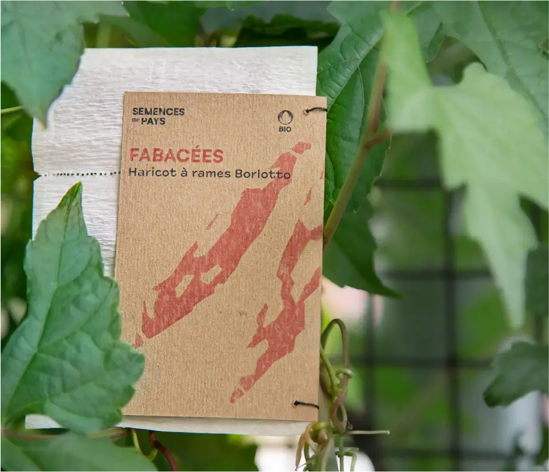

Semences de pays développe une production de semences reproductibles, rustiques et adaptées à une agriculture biologique proche des cycles de la nature, en collaboration avec les initiatives nourricières de proximité.
NOS SEMENCES
Cucurbitacées
Potimarron français - Cucurbita maxima
Potimarron orange en forme de toupie au caractéristique goût de châtaigne. Le plus ancien potimarron débarqué sur le continent.
Fabacées
Haricot à rames Borlotto - Phaseolus vulgaris
Cette variété traditionnelle italienne de haricots à écosser aux gousses zébrées de rouge donne une belle récolte de graines de plusieurs couleurs.
Fleurs
Bleuet Blauer Junge - Centaurea Cyanus
Les délicats pétales de cette magnifique fleur des champs s'emploient pour embellir vos salades d'été et, séchés, dans des mélanges de tisanes.
Découvrez nos trésors de biodiversité sur le shop!